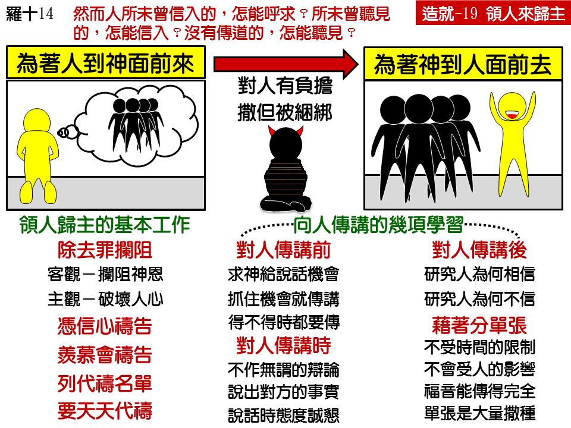

诗歌：667 首、669 首
重要经文：
罗马书一章十六节：我不以福音为耻；这福音本是神的大能，要救一切信的人，先是犹太人，后是希利尼人。
罗马书十章十四节：然而人所未曾信入的，怎能呼求？所未曾听见的，怎能信入？没有传道的，怎能听见？
马可福音十六章十五节：祂又对他们说，你们往普天下去，向一切受造之物传扬福音。
纲目要点：
壹 为着人到神面前来：
一 祷告是领人归主的基本工作。
二 祷告最大的拦阻是罪。
三 祷告时应当凭着信心。
四 要羡慕作会祷告的人。
五 操练列出名单，天天为人祷告。
贰 为着神到人面前去：
一 对人传讲前：祷告求神给说话的机会，一有机会就讲。
二 对人传讲时：不作无谓的辩论，要抓住事实，态度要诚恳。
三 对人传讲后：要仔细的研究而学如何讲说的功课。
叁 借着分发福音单张到人面前去：
一 单张没有时间的限制——太十八。
二 单张也不受人的限制。
三 单张能将福音传的完全。
四 分发单张乃是到处撒种。
五 好好的祷告专心的作。
信息选读：
祷告是领人归主的基本工作
领人归主有一个基本的工作，就是在没有向人开口之前，必须在神面前开过口。要先求告神，然后到人面前去说话。总是先到神面前去说话，不是先向着人说话。有些弟兄姊妹很热心的要带领人归主，但是他们没有为那些人祷告。我们要知道，人如果在神面前没有负担，那么在人中间虽然有兴趣，救人的工作还是作不来。人总得在神面前有负担，然后才能在人面前作见证。会带领人归主的人，都是会祷告的人。如果祷告得答应出了问题；如果对于祷告没有把握，那么对于带领人归主也就没有把握。所以，对于祷告的功课，必须有实际的学习，不可马虎的过去。
祷告最大的拦阻是罪
祷告是一个试验，试验你在神面前的属灵情形如何。你属灵的情形如果是对的，是正常的，那么这些人会一个一个的得救。如果过了很长久，你的祷告还没有得着答应，那必定是你在神面前有病，你就该到神面前去求光照，在那里有问题要对付。人如果对于罪的问题没有好好的对付，他在神面前的祷告就自然有了拦阻。没有承认、没有摆在血底下的罪，在神面前是一个大拦阻，使人的祷告不能蒙神垂听。这是客观方面的。在主观方面，罪破坏了人的良心。人一犯罪，不管他自己对自己说什么话，不管他在圣经中读了多少话，不管圣经中的应许有多少，不管神有多少悦纳人的恩典，他的良心总是輭弱下去，爬不上来。千万不要容让罪，以致在神面前软弱了，就不能替人求。罪如果存在，你的祷告就出不去。所以，罪的问题是第一个问题。你要常常注意，天天注意。在神面前有了好的对付，才能在神面前有好的祷告，才能把人带到主面前来。
祷告时应当凭着信心
还有一件紧要的事要注意，就是祷告应当有信心。如果良心无亏，信心就容易刚强。如果信心刚强，自然而然祷告容易得着答应。什么叫作信心？就是在祷告的时候，没有疑惑，能接受神应许的话语。要学习从起头就作一个满有信心的人。不是凭着感觉，不是凭着头脑，是要凭着神的话来相信。神应许的话像现款一样，是可以拿来用的。神的应许，就是神的工作。应许，是告诉我们神的工作；工作，是显明神的应许。你要接受神的应许，像接受神的工作一样。当你凭着神的话来相信，不是住在疑惑里，而是住在信心里的时候，你就要看见神所说的话的真实，你的祷告就要得着答应。
要羡慕作会祷告的人
弟兄姊妹要有一个雄心，要在神面前作一个会祷告的人，作一个有能力的人。什么叫作人在神面前有能力呢？没有别的意思，就是他说话，神肯听，好像神喜欢受他的影响似的。我们要在里面有一个羡慕，有一个意念，盼望我们的祷告能常常被神听。你祷告，神常听，这一个比什么都好。你能够被神信托到一个地步，你要什么，神就给你什么，这是一件大事。列出名单天天为人祷告
要带领人归主，要让主把那些人摆在你心里，自然而然你心里有负担，会替好几个人或者好几十个人祷告。在你写名字的时候，最要紧的，是要好好的接受主所摆在你心里的名字，不是随便坐下来写一张名单。如果随便写，就要白花许多工夫。你的工作作得好不好，就在乎起头起得好不好。你要专一的求神给你几个人。你家里的人，你的朋友、同事、同学，你所认识的人，自然而然，他们的名字会到你心里来，叫你觉得这几个人，你盼望他们赶快得救。
你每天要划出一定的时间来作代祷的工作。如果没有一定祷告的时间，就没有一定的祷告，结果就没有祷告。不要心太大，想划两个钟点，结果不能实行。所以，为着能实行的缘故，还不如划出一点钟、半点钟、一刻钟。总要划出一个时间来，为你所要祷告的人祷告。总不能放松，要天天这样作。过些日子，会看见罪人一个一个的得救。
对人说话时该注意的事
许多人以为辩论能感动人心，其实没有这件事。辩论，至多只叫人的头脑服，他虽然哑口无言，但心里还是不服。所以辩论是没有多大用处的。你要少说辩论的话，多说见证的话。
领人归主的技巧，乃是在抓住事实。所以，往往是简单的人能领人归主，而道理讲得好的人，却不一定能领人归主。不要多讲道理，要多告诉人事实，同时，态度非诚恳不可。救人灵魂绝对不是一件开玩笑的事。我们曾看见一个人，他要带领人得救，他也肯祷告，但是他的态度不对，一面讲主的事，一面讲笑话。这样，就把什么属灵的力量都丧失了，就没有法子带领人归主。所以态度总得诚恳，不可嘻嘻哈哈的带着轻浮的态度。要叫人看见，这是世界上最严肃的事。
如果你领人归主的工作遇见了失败，千万不要把所有的难处都推在别人身上。所有会领人归主的人都是察看自己有什么难处。我们不能等在海边，盼望鱼跳到岸上来。领人归主不是这么简单的，要花工夫去研究，到底病在什么地方。领人归主是有技术的，这个技术，是在我们带领人的时候学来的。失败也有所学习，看为什么失败；得着也有所学习，看为什么得着。每一次，都得研究为什么缘故。
借着分发福音单张到人面前去
我们今要对三个、五个、十多个人讲，要花很多工夫。但是，我分单张，一天平均撒一千、两千、三千，没有难处。一千张，有一个人得救，就够了。所以，初信的人要学习大量的把单张送出去。初信的弟兄，有空的时候，要把单张摆在口袋里去分。这一件事，需要像领人归主一样，好好的祷告，专心的作。分给人的时候，或者说一句话，说两句话，或者不说，都没有关系。初信的人如果去作，可以得着顶大的帮助。
课程复习：
一 什么是带领人归主的基本功课？
二 祷告不得答应有哪二种阻隔？
三 在为人祷告时我们应该有哪二个操练？
四 我们在对人说话时该注意什么事？
五 我们如何操练大量向人传福音？
